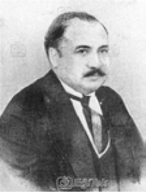

Z
zaman (time) Sosyal bilimlerde genellikle nedensellik ilişkisi ile olayların geçmişten bugüne; bugünden yarına birbirini izlemesi. Bu süreçte önce, neden (uyarıcı, etki); ardından da sonuç (tepki, davranış) geliyor. Zaman kavramının psikolojideki uygulamaları, çocukta zaman kavramının ortaya çıkışı, zaman kavramına ilişkin sorunlar ve başka ayrıntıların kavranması için ilgili maddelerin incelenmesi gerekiyor. Bkz. zaman algısı.
zaman algısı (time perception) Zaman aralıklarını hesaplama, güneşin konumuna bakarak yaklaşık olarak zamanı söyleme, zamanın geçiş hızını değerlendirebilme ve benzerleri de içinde olmak üzere, zamanın farkında olma. Bu terim çoğunlukla öznel zaman yaşantısı için kullanılıyor. Örneğin, belli bir işle yoğun bir biçimde uğraştığımız, eğlendiğimiz, sevdiğimiz bir kişiyle birlikte olduğumuz anlarda zaman çabuk geçiyor; buna karşılık sıkıldığımız, boş olduğumuz zamanlar da çok yavaş geçiyor. Bu nitelikteki zaman algısına psikolojik zaman deniyor.Bkz. algı.
zaman çizelgesi (time table) Öğrencinin zamanı iyi kullanması amacıyla günün saatlerine bölünmüş bir sayfaya, gün içinde gösterdiği etkinliklerin tümünü, süreleriyle birlikte yazdığı bir çizelge. Çizelgede her etkinliğin önünde, öğrencinin o etkinliğe ilişkin duygu ve düşüncelerini belirteceği bir bölüm bulunuyor. Her sayfa bir gün için kullanılıyor. Çizelgede her etkinliğe ayrılan zaman yüzdesine de yer veriliyor. Öğrencinin zamanını iyi kullanmayı öğrenmesi için bu çizelgeyi en az iki hafta içtenlikle doldurması gerekiyor. Bu çizelge, öğrencinin ilgi alanlarını, toplumsal etkinlik eğilimlerini de yansıtabiliyor.
zaman duyusu Bkz. zaman algısı.
zaman eşiği (timethreshold) Salt zaman eşiği: İki uyarıcı arasındaki zaman aralığının, bir izlenim biçiminde kaynaşmayıp birbirini izler biçimde algılanması. Salt zaman eşiği, her duyu alanı için büyük farklar gösteriyor. Bu eşik, işitmede yaklaşık 0.002; görmede ve tat almada 0.01 ile 0.04 saniye arasındadır.
zaman-hareket çözümlemesi (time and motion analysis) Endüstri psikolojisinde, iş iyileştirme çalışmalarında belli bir iş ya da işlemin aldığı sürenin incelenmesi. Bu inceleme ile aynı işi daha kısa sürede yapmanın ve birim zamandaki verimliliği artırmanın, iş kazalarını önlemenin, yorgunluğu azaltmanın yöntemleri belirlenmeye çalışılıyor.
zaman hatası (time error) Zamandaki oransal konumlarına bağlı uyarıcıları yanlış değerlendirme eğilimi. Örneğin, birbiri ardı sıra çalınan ilk iki özdeş nota, daha yüksek ses yoğunluğuna sahipmiş gibi daha şiddetli algılanma eğilimi gösteriyor.
zaman kazanma yöntemi (saving method) 1885’te Ebbinghaus’ın unutma konusuyla ilgili ön çalışmalarında kullandığı yöntem. Bu yöntemden yararlanılarak belli bir konuyu öğrenmek için harcanan zamanla aradan belli bir zaman geçtikten sonra aynı konuyu öğrenmek için harcanan zaman karşılaştırılıyor; bunların birbirine olan yüzdesi bulunuyor ve bu yolla, öğrenilenlerin bellekte tutulma derecesi belirleniyor.
zamanlama ipucu (Tining cue) Ses kaynağının yönünü belirleme konusunda temel bilgi kaynaklarından biri. Zamanlama ipucu, sesin iki kulağa ulaşma zamanındaki farka dayanıyor. Bkz. kulaklar arası gecikme; şiddet ipucu.
zaman örnekleme Bkz. veri toplama teknikleri.
zaman örneklemi (time sample) Gözlemlerin belli zamanlarda ya da belli zaman aralıklarında yapıldığı bir örneklem biçimi.
zamansal duyarlık (temporal acuity) Duyu sisteminin, çok kısa zaman aralıklarıyla birbirinden ayrılan olayları ayırt edebilme yetisi.
zararlı ceza Bkz. ceza.
zayıf akıllılık Bkz. zekâ geriliği.
zayıf benlik Bkz. güçlü benlik; yapısal kuram (Benlik).
zayıf eşdeğerlilik (weak equivalence) Karşılaştırılan iki sistem arasındaki ilişki. Bu iki sistemin ancak zayıf bir eşdeğerlilik (benzerlik) taşıması durumunda, aynı dışsal davranışı üretme işlevini yaptıkları; ancak, bunun için farklı yöntemler kullandıkları belirtiliyor. Örneğin, ikiliden her ikisinin de satranç oynaması; ancak, oyunda bir sonraki hamleye karar vermede farklı yöntemler uygulamaları anlamında, satranç oynayan insanla bilgisayar, zayıf eşdeğerlidir. Biliş psikolojisinde zayıf eşdeğerlilik, iki bakımdan önemlidir. Birincisi, Turing testinin sunduğu türden bir karşılaştırmadır. Kimi zaman buna Turing eşdeğerliliği denmesinin nedeni de budur. İkincisi, biliş bilimlerinde zayıf eşdeğerlilik, kuramlara geçerlik kazandırmak açısından gerekli olsa da yeterli sayılmıyor. Çünkü biliş bilimlerindeki kuramlarda ya da simulasyonlarda açıklanacak sistemle aynı işlevleri yerine getirmesi gereğinin yanı sıra, bu işlevleri aynı yoldan yerine getirmeleri de belirleyici oluyor. Bu gerekliliğe güçlü eşdeğerlilik deniyor.
zayıf işlev Bkz. analitik psikoloji.
zedelenme Bkz. travma.
zekâ (intelligence) İnsanın algılama, soyutlama, öğrenme, düşünme, uslamlama, yargılama, çıkarsama ve yeni durumlara uyum yeteneklerinin bütünü; akıl, anlak, biliş, düşünme yetisi. Zekâ, tanımı üzerinde anlaşma sağlanamamış bir terimdir. En genel anlamıyla zekâ; öğrenme, soyut düşünme, usavurma, deneyimlerden edinilen bilgileri kullanma, yeni durumlara uygulama, sorun çözme, bellek gibi zihinsel (ansal) yeteneklerin bütünü olarak düşünülüyor. Değişik yaklaşımlara göre zekâ, değişik biçimde tanımlanmıştır. Örneğin Thorndike’a göre zekâ, kişinin kazandığı uyarıcı-tepki bağlantısının ölçüsüdür. İlk zekâ testlerini yapan Binet’ye göre zekâ, yukarıdaki genel tanıma yakın bir anlam taşıyor ve geliştirdiği testlerle ölçülebiliyor. Piaget’ye göre zekâ ise her türlü karmaşık usavurma sürecinin dayandığı ve doğuştan gelen genel bilişsel yetidir. Kimileri de belli bir zekâ tanımı yapmaya yaklaşmayarak, “Zekâ, zekâ testlerinin ölçtüğü şeydir.” biçimindeki açıklamayı yeğlemiştir. Otoritelerin bir bölümü zekânın g etkeni gibi genel bir etken olduğunu düşünürken, bir bölümü, zekâ türlerinden söz ediyor. R. B. Cattell, iki genel yetiyi belirlemek amacıyla faktör analizini kullanarak kristalleşmiş zekâ ile akışkan zekâdan söz etmiştir. Çağdaş öğrenme kuramlarında zekâ, çok boyutlu ve dinamik bir etken olarak değerlendiriyor. Guliford, işlemin türüne, içeriğine ve istenen sonuca bağlı olarak zekâyı 150 kadar özel yetiye ayırmıştır. Kimileri, bu konuda genetik etkenleri öne çıkarırken, kimileri toplumsal-kültürel çevrenin (öğrenmenin) belirleyici olduğunu savunmuştur. Bütün bu görüşlere karşın zekâ testleri ve zekâ araştırmalarının önünde yanıt bekleyen sorular şunlardır: (1) Zekânın ne kadarı kalıtsaldır, ne kadarı sonradan kazanılıyor? (2) Zekâ yaşla birlikte değişiyor mu; değişiyorsa bu nasıl ve ne ölçüde gerçekleşiyor? (3) İnsan ve hayvan zekâsı arasındaki fark nedir? (4) Zekânın kültürel bileşenleri nelerdir? Zekânın kalıtsal yanına (zekâ gizilgücüne) şimdilik önemli düzeyde etki edemediğimize göre, kişi, kendisi için hazırlanan çevrenin elverişliliği ölçüsünde iyi gelişecek ve yeteneklerini gösterecek demektir. Zekânın ne olduğu, çok değişik anlatımlarla ortaya konulmaya çalışılsa da zekâ en çok, geçmiş deneylerden yararlanarak sorunlara çözüm getirebilme yeteneği olarak tanımlanıyor. Son zamanlarda özellikle çoklu zekâ kavramı çok yandaş topluyor. Bkz. biliş; bilişsel gelişim; çoklu zekâ; kristalleşmiş zekâ; kültürden bağımsız test; mekanik zekâ; somut zekâ; soyut zekâ; üstün zekâlıların eğitimi; zekâ bölümü; zekâ bölümü değişmezliği; zekâca üstün; zekâ dağılımı; zekâ düzeyi; zekâ etkeni: zekâ geriliği; zekâ geriliğinin yol açtığı ruhsal bozukluklar; zekâ mekanikleri; zekânın derecelendirilişi; zekâ olgunluğu; zekâ ölçeği; zekâ ölçümü; zekâ pragmatikleri; zekâ testi; zekâ yaşı.
zekâ bölümü (ZB) (intelligence gotient) Bkz. zekânın derecelendirilişi.
zekâ bölümü değişmezliği (constancy of intelligence) 1. Bir kişinin göreli genel yetenek düzeyinin, gelişme döneminde ve yetişkinlikte, çökme dönemine kadar aynı ya da hemen hemen aynı kalması. Aynı test ya da yaklaşık olarak aynı test bireye yeniden verildiğinde zekâ yaşının takvim yaşına oranı, değişmeme eğilimi gösteriyor. 2. İnsanın, zekâ bölümü bakımından, ortalama başarısından yaklaşık 5 puan kadar bir kayma gösterme olasılığı.
zekâca üstün Bkz. üstün zekâlı (zekânın derecelendirilişi).
zekâ dağılımı (intelligence distribution) Bir grup kişide görülen zihinsel dağılımdaki değişiklik kapsamı ve bu kapsam içinde her basamakta görülen yineleme sayısı. Zekâ dağılımı çoğu kez yineleme çizelgesi ile belirtiliyor ve her basamaktaki ya da aralıktaki verilerin sayısı ile yüzdesini gösteriyor.
zekâ düzeyi (mental level) 1. Zekâyı ölçen soruları yanıtlayan bir kişinin başarı derecesi; bir kişinin başkalarına göre zihinsel yeteneğinin ölçüsü; zekâ seviyesi; anlak düzeyi. Genellikle bu ölçü, test puanları ile gösteriliyor. Bunu zekâ bölümü ile aynı saymak, yanlıştır; bu, yaş ölçekli ve standart testlerde sözkonusu oluyor ve Z.Y. olarak gösteriliyor. 2. Günlük yaşamda ortaya çıkan işlevsel zekâ düzeyi.
zekâ engeli Bkz. zekâ geriliği.
zekâ etkeni (intelligence factor) Zekâyı oluşturan etkenlerden biri. Thurstone’un temel zihinsel yetenekler (PMA) testindeki grup, hız etkenlerinden biri gibi, Sperman’ın g etkeni. Ayırt edilebilen birçok zihinsel yeteneklerden herhangi biri.
zekâ geriliği (mental quatient (IQ)) Genel zihinsel yeteneğin, ortalamanın önemli ölçüde altında olması; oligofreni. Zihinsel yetenek alanları; iletişim, kendine bakım, ev yaşamı, toplumsal ya da kişiler arası ilişki becerileri, toplumun sağladığı olanakları kullanma, kendini yönetip yönlendirme, okulla ilgili işlevsel beceriler, iş, boş zamanlar, sağlık ve güvenlik alanlarında kendi kültürüne ve yaşına uygun beklenen ölçüleri kapsıyor. Bir kişide zekâ geriliği olduğu yargısına varmak için, o kişinin, bu yetenek alanlarından en az ikisine uyumda belirgin sınırlılığının olması aranıyor. Bkz. birincil zekâ geriliği; zekânın derecelendirilişi.
zekâ geriliğinin yol açtığı ruhsal bozukluklar ( psychological disorders çavsed by mental retardedness) Yalnızca zekâ geriliğine bağlı hiçbir davranış biçimi ve kişilik özelliği yoktur. Zekâ geriliği olanların bir kısmı saldırgan iken, bir kısmı sakindir. Saldırgan davranışlara, bunların iletişim becerilerinin kısıtlılığı ve kendilerini anlatamamaları yol açıyor. Zekâ Yönünden Engelli Çocuk ve Ergenlerin Uyum Bozuklukları Gösterme Nedenleri: Bunlar şöyle sıralanıyor: (1) Davranışlarının uygunsuz olduğunu ayrımsayamıyor ya da kötü dürtülerini denetleyemiyorlar. (2) Çevrelerinden edindikleri bilgiyi gerekli süreçlerden geçirme yetersizliği gösteriyorlar. (3) Çevrenin ilgisini çektiklerini fark ettikleri için uyumsuz davranışlara yöneliyorlar. (4) Tıpsal hastalıklarının, öznel bir rahatsızlıklarının, öfkelerinin ya da yaşadıkları bir kaybın sıkıntısını uyum bozukluğu ile yansıtıyorlar. (5) Bu tür davranışı, ruhsal bozukluk yelpazesinde oluşturabiliyorlar. Zekâ geriliği olan çocuklar, normal zekâlılardan çok farklı toplumsal-ruhsal ortamlarda yaşıyorlar. Bunlar, türlü zorlanmalarla, olumsuz eğitim ve bakım biçimleriyle karşı karşıya getiriliyorlar. Çocuklarının zekâ geriliğini öğrenen anne babaların büyük çoğunluğu, yas tutuyor; kızgınlık, üzüntü yaşıyor ya da yadsıma yolunu seçiyor. Bu tutum, normal bağlanma sürecinin gerektirdiği duygusal bağın zayıf kalmasına yol açıyor. Birçok baba ise tüm yükü ve sorumluluğu annelere bırakıyorlar. Zekâ geriliği olan çocukların ayrı sınıflarda okutulması, onları yetenekleri, davranışları normal arkadaşlarla birlikte öğrenmekten alıkoyuyor; bu uygulama onlarda utanma, kaçınma, farklılık duyguları yaratıyor. Yaşları ilerledikçe, türlü etkinliklerdeki yetersizlikleri, özgüvenlerini azaltıyor. Okulların da bilgi ağırlıklı eğitim vermesi, bireysel ayrılıklar gerçeğini yok sayması, topluma ve uygulamaya dönük beceriler öğretmemesi yüzünden, ergenlik dönemine gelen bu çocuklar, kendilerini hem bilişsel hem de deneyimsel yetersizlikler içinde buluyorlar. Bütün bu yetersizlikler, bu çocuklarda duygusal iniş çıkışlarla ve patlamalarla dışavurumlara neden oluyor. Yukarıda belirtilen sorunlarıyla birlikte bu çocukların cinsel kimlik kazanmaları, cinsellik düzenleri ve cinsel özdeşimleri üzerinde de önemle durulması gerekiyor. Zekâ geriliği olanlar, ruhsal bozuklukları nedeniyle en çok, okul öncesinden okula; okuldan işe; çocukluktan ergenliğe geçişte psikoloğa ya da psikiyatriste getiriliyorlar. Oysa bunların erken yaşlarda uzman yardımı almaya başlamaları; tedavilerinde anne babalarla bakıcıların davranışlarının da düzeltilmesi, özellikle önem taşıyor. Zekâ geriliği olan çocuklarda ruhsal bozukluklar, normal bireylerden 2-3 kat daha fazladır. Zekâ geriliği derecesi arttıkça, sinir bozukluğu ile ilgili olarak davranış bozukluğu ve ruhsal bozukluk miktarı da artıyor. Zekâ geriliği olan gençte, yoğun toplumsal-ruhsal stresler yaşaması nedeniyle, kaygı bozukluğu görülüyor. Yaşanan bu kaygının kaynağını, kırılgan özgüven, bakım vereni yitirme korkusu, yeni durumlara uyum güçlüğü ve sorunla baş edememe korkusu oluşturuyor. Bunlarda görülen iletişimsel zorluklar ve kendine zarar verme davranışları, yüzde 65-88’i geri zekâlı olan otistiklerle çok kez benzerlik gösteriyor. Zekâ bölümü 40’ın üzerinde olan kişilerdeki ruhsal belirti ve ruhsal bozukluklar, özde öbür kişilerle aynıdır. Bu bozuklukların tedavisinde ilaç, dikkatli kullanılmak koşulu ile çok etkili oluyor. Bu engelliler, ilaçların yanı sıra özel eğitim, toplumsal yetenek eğitimi; özgüveni artıran, kızgınlığı değişik yollarla ortaya koyma yollarını içeren ruhsal tedavi programlarından çok yararlanıyorlar. O nedenle bu çocukların izlenmesinde çocuk psikiyatristlerinin, psikolog, eğitimci, dil terapisti ve sosyal hizmet uzmanıyla birlikte çalışmaları gerekiyor.
zekâ katsayısı Bkz. zekâ bölümü.
zekâ mekanikleri (mechanics of intelligence) Baltes’in ikili işlem modeline göre, bilgi işleme ve sorun çözme yetisi; bilişin, yaşla ilişkili olarak sıklıkla zayıfladığı bir alanı. Bkz. zekâ pragmatikleri.
zekânın değişmezliği Bkz. zekâ bölümü değişmezliği
zekânın derecelendirilişi (assessment of intelligence) Zekânın standart zekâ testlerinden elde edilen zekâ bölümü (ZB) ya da zekâ katsayısına (ZK’ye) dayanarak aşamalandırılması. Zekâ bölümü, zekâ testleriyle belirlenen zekâ yaşı (ZY), takvim yaşına (TY’ye) bölünüp çıkan sayı 100’le çarpılarak bulunuyor. Test materyali değerlendirilirken, test uygulanan bireyin toplumsal-kültürel birikimi, ana dili, iletişim ve duyusal sorunları göz önünde tutuluyor. Buna göre, zekânın derecelendirilişi şöyle gerçekleştiriliyor: (1) İleri Derecede Ağır Zekâ Geriliği: Zekâ bölümü 20’nin altında olanların zekâsı bu adla anılıyor. Genel grubun yüzde 1-2’sini oluşturan ileri derecede ağır zekâ geriliği olanların, özel nörolojik bozuklukları, belirgin yürüme ve konuşma kusurları bulunuyor. Bunlar, ancak sürekli yardım ve destek ile yalnızca basit işleri yapabiliyorlar. İleri derecede ağır zekâ geriliği olanların çocukluk dönemindeki ölüm oranları yüksektir. (2) Ağır Zekâ Geriliği: Zekâ bölümü 20-35 arasında olan kişilerin zekâsı, ağır zekâ geriliği olarak adlandırılıyor. Zekâ geriliklerinin yüzde 3-4’ünü oluşturan ağır zekâ geriliği olanlar, temel bakım konularında eğitilebilir grup niteliğini taşıyorlar. Bunların ancak, bir kısmı konuşmayı öğrenebiliyor. Bugünün eğitim koşullarında yalnızca okul öncesi eğitimden yararlanabilen bu çocuklar, daha çok destek ve yakın denetimle yaşamlarını sürdürüyorlar. (3) Orta Derecede Zekâ Geriliği: Orta derecede zekâ geriliği, zekâ bölümü 35-50 arasında olanlardır. Bunlar, eğitilebilir grup diye nitelendiriliyor. Zekâ geriliklerinin yaklaşık yüzde 10’unu oluşturan orta derecede zekâ geriliği olanlar, bugün uygulanmakta olan ve bireysel ayrılıklar gerçeğini göz ardı eden eğitim nedeniyle 2. sınıftan sonra normal sınıflarda okuyamıyorlar. Özel eğitimle ve uygun aile tutumuyla desteklendiklerinde, ancak dördüncü sınıfa gelebiliyorlar. Ergenlik döneminin kimi kurallarını uygulamada zorlandıkları oluyor. Bunlar, yeterli bir anne baba desteği, yeterli bir eğitim ile toplumsal yaşamlarını bir ölçüde bağımsız olarak sürdürebiliyor; fazla beceri istemeyen işlerde çalışabiliyorlar. (4) Hafif Zekâ Geriliği: Zekâ bölümü 50-70 arasında olanlar, hafif zekâ geriliği gösterenlerdir. Tüm zekâ geriliklerinin yüzde 85’i ile en geniş grubu bunlar oluşturuyor. Hafif zekâ geriliği de eğitilebilir grup olarak nitelendiriliyor. Özel eğitimden yararlanabilen bu gruptaki çocuklar, ilköğretimin birinci kademesini bitirebiliyorlar. Bu gruba girenlerin zekâ gerilikleri, ileri yaşlara dek fark edilmiyor. Bunlar, konuşma ve toplumsal yeteneklerini okul öncesi yıllarda kazanıyorlar. Bunların çok az duyusal ve devimsel bozuklukları bulunuyor. Kendi başlarına toplumsal ve mesleksel yetenekler edinmelerine karşın erişkin yaşlarda, alışmadıkları olağan bir sıkıntı ile karşılaştıklarında, desteğe gereksinim duyuyorlar. Uygun bir destek ve denetimle toplumda yaşayabiliyorlar. Zekâ geriliği, daha çok erkeklerde görülüyor. Nedenleri arasında kromozom bozuklukları, gebelikte annenin geçirdiği kimi rahatsızlıklar, alkol ve madde kullanımı, kötü bakım, erken doğum, doğum sırasında beynin örselenmesi, ağır maden zehirlenmeleri, aşırı beslenme bozuklukları, toplumsal-kültürel ve toplumsal-ekonomik yoksunluk yer alıyor. Bkz. zekâ geriliği (Zekâ geriliğinin yol açtığı ruhsal bozukluklar). Normal ile Normal Üstü Zekâlılık: Bunlar ise şöyle derecelendirilip nitelendiriliyor: (1) Öğrenme Güçlüğü Çekenler: Zekâ bölümü 70-85 arasında olanlar, öğrenme güçlüğü çekenler diye adlandırılıyor. Bunlar, desteklenerek sınıf geçmeyi başarıyorlar. (2) Normal (orta) Zekâlılar: Zekâ bölümü 85-115 arasında olanlara normal zekâlı deniyor. (3) Zekiler (ortanın üzerinde zekâya sahip olanlar): Zekâ bölümü 115-130 arasında olanlar, zeki olarak adlandırılıyor. Bunlar, okullarda üstün başarılarıyla kendilerini belli ediyorlar. (4) Çok Zekiler (dâhiler): Çok zekilerin zekâ bölümleri, 130 ve bunun üstündedir. Değişik alanlarda birçok buluş gerçekleştirenler, yaratıcı etkinlik gösterenler bunlardır.
zekâ olgunluğu (mental maturity) 1. Belli bir yaşta erişilmiş zekâ basamağı. 2. Zekâ gelişiminin ulaştığı doruk noktası. Bu noktadan sonra zekâ gelişimi duruyor.
zekâ oranı Bkz. zekâ bölümü.
zekâ ölçeği (intelligence scale) Ölçek ilkelerine göre hazırlanmış bir zekâ ölçüsü; zekâ testi. Genellikle zihinsel yetenek basamağına uygun ve gittikçe artan güçlükteki ödevleri içeriyor. Zekâ testiyle gelişigüzel olarak eş anlamda kullanılıyor.
zekâ ölçümü (measuremaent of intelligence) Bireylerin zekâlarını standart bir ölçeğe vurarak nicelik bakımından karşılaştırma.
zekâ pragmatikleri (pragmatics of intelligence) Baltes’in ikili işlem modeline göre, zekânın yaşla birlikte gelişen ve pratik düşünme, bilgi ve beceri birikimini uygulayabilme, uzmanlaşma, mesleksel üretkenlik ve bilgelik gibi özellikler içeren boyutu. Bkz. zekâ mekanikleri.
zekâ puanı Bkz. zekâ bölümü.
zekâ testi (intelligence test) Zekâyı ölçtüğü ileri sürülen her türlü test; IQ testi, biliş testi. Bu tür testlerin genellikle belli zorluk dereceleri ve her yaş grubu için büyük örneklemler kullanılarak standartlaştırılmış puanlama sistemleri bulunuyor. Zekâ testlerinin, zekâyı gerçekten ölçüp ölçmediği, bugün çok tartışılan bir konudur. Kimi otoriteler, bu testlerin bir şeyleri ölçtüğünü; ancak, ölçülen şeyin zekâ olduğunun söylenemeyeceğini savunuyorlar. Kimileri de bu testlerin, belli toplumsal-ekonomik sınıfların; özellikle elit orta sınıfın öğrenme alışkanlıklarına göre düzenlendiğini, alt tabakadan insanlara karşı olumsuz önyargılar içerdiğini ileri sürüyorlar. Bütün bu farklı görüşlere karşın, zekâ testlerinin en azından genel bir öğrenme ve çevreye uyum yetisini ölçtüğü ve bu nedenle daha çok eğitim ve iş dünyasında uygulama alanı bulduğu da bir olgudur. Bkz. kültürden bağımsız test; yetenek testleri.
zekâ yaşı (mental age) Kişinin zekâ testinde aldığı puanın, aynı yaştaki başka kişilerin aldıkları puanların ortalamasına bölünmesiyle elde edilen sayısal bir değer. Örneğin, bir zekâ (IQ) testinde 150 puan alan 6 yaşındaki bir çocuğun zekâ yaşı, 9 olarak hesaplanacak demektir: 150:100x6=9. Bunun, özellikle zekâ gelişiminin hızlı olduğu erken yaşlarda kullanılması öneriliyor; 13-14 yaşlarından sonra anlamlı sonuç vermiyor.
zemin (background) 1. Fon, arka cephe. 2. Bir sorunu ya da durumu anlamak için gerekli olan ön bilgi. 3. Bir insanın yaşantılarının, bilgisinin ve eğitiminin tamamı. 4. Her türlü temsilin gerçekleşmesini olanaklı kılan ve temsili olmayan bir dizi yeti. Biyolojik ve kültürel yetiler, tutumlar, beceriler, varsayım ve önermeler de bunun içindedir. Bkz. ön plan; niyetlilik; örtülü bellek; örtülü bilgi.
zemin ateşlenme oranı (background firing rate) Çoğu hareketli olan nöronların, doğrudan uyarılmadıkları zaman bile bir zemine ya da tetiklenmeye gereksinim duymadan eylem gizilgücü göstermeleri. Bkz. zemin.
zenginleştirilmiş algı (enriched perception) Simge, işaret ya da açık ve kesin olmayan uyaranları, değer ve gereksinimlerin etkisiyle gerçekte olandan daha güçlü, renkli ve ayrıntılı olarak algılama.
zenginleştirme etkinlikleri Bkz. zenginleştirme programları.
zenginleştirme programları (enrichment programs) Düzenli program etkinliklerinin ötesine geçen öğrenme etkinlikleri. Planlı dersleri kısa sürede tamamlayabilen yetenekli öğrencilerin bilgi düzeyini yükseltmek ya da derinleştirmek için özel sınıflarda ya da özel okullarda uygulanıyor. Bu nitelikteki programların başarısı, öğrencilerin yeni bilgiler arama istek ve özeni, önderlik fırsatları yakalayabilmesi, kişisel ilgilerini izleyebilmesi, yaratıcı görevler üstlenebilmesi, girişim gücü ve derinlemesine araştırma güdüsü gibi etkenlerle öğretmenin bunları yönetebilme becerisine bağlıdır. Bkz. hızlandırma.
zevk prensibi Bkz. haz-acı ilkesi.
zırh (armor) Bireyin, duygu ve duyularını; özellikle de kaygı, öfke ve cinsel heyecanını dışa vurmasına karşı geliştirdiği kas tutulmalarının (süreğen kas spazmlarının) bütünü.
zevk ilkesi Bkz. haz-acı ilkesi.
zigot (zygote) Yarısı anneden, yarısı da babadan gelen 23 çift kromozomdan oluşan döllenmiş yumurta; tohum. Zigot, hücre bölünmesiyle tek bir hücreden, türünün, anne babasının genetik (kalıtsal) özelliklerini taşıyan yetişkin bir üyesi durumuna geliyor.
zigotik etki geni (zygotic effect gene) Fenotipi annenin genotipine değil de zigotun genotipine bağlı olan gen.
zihin (mind) 1. Anlayış, kavrayış, algılama yetisi. 2. Yaşantıları, öğrenilen konuları, bunların geçmişle bağlantılarını bilinçli olarak beyinde saklama gücü, bellek. 3. Düşünme, bilme yetisi, akıl, beyin, bilinç. 4. Canlının duygu ve davranışları dışındaki ruhsal süreç ve etkinliklerinin örgütlü bütünlüğü. Bkz. imgeleme: zihin aşıcılar; zihin karışıklığı; zihin karmaşası; zihin kuramı; zihinsel; zihin tutulması; zihin yarılması; zihni bulanık-heyecanlı.
zihin açıcılar (psychedelics) Merkez sinir sistemini doğrudan etkileyerek algısal çarpıtmalar, sanrılar, kuruntular, zihinsel içgörüler, yaratıcı yetide artış, psikozlara özgü ruh hastalığı belirtilerine benzer belirtiler gibi bilinç değişiklikleri yaratabilen maddelerin ortak adı; psikotojenik. Bununla birlikte terim daha çok, bu özellikleri nedeniyle hekim önerisi dışında alınan LSD, esrar, meskalin gibi uyuşturucular için kullanılıyor.
zihinde oluşturma Bkz. imgeleme.
zihin karışıklığı (mental confusion) Düşünme sırasında, düşünceler arasındaki ilişki ve bağlantının yitmesi. Bkz. yaşlılık bunaması.
zihin karmaşası (mental complexity) Şaşkınlık, çevreden haberdar olma keskinliğinde azalma, dikatin bozulması; zamana, yere, kişiye bozuk yönelim gösterme ile beliren bilinç bozukluğu. Bkz. sabuklama.
zihin kuramı (theory of mind) Çocuğun, kendi zihninin ve başkalarının zihinlerinin nasıl çalıştığına; duygu, istek ve inançların nasıl oluştuğuna ilişkin geliştirdiği kuram. Çocukların 4-5 yaşlarına dek bu tür bir kuram geliştirdikleri varsayılıyor.
zihinsel (intellectual) Zihinle ilgili. Bkz. zihinsel büyüme; zihinsel çöküntü; zihinsel düzey; zihinsel engelli; zihinsel gelişim; zihinsel geli,şim kuramı; zihinsel gerçeklik; zihinsel gerilik; zihinsel harita; zihinsel imge; zihinsel işlev; zihinsel körlük; zihinsel kurallar; zihinselleştirme; zihinsel model; zihinsel olgunluk; zihinsel ölçek; zihinsel ölçüm; zihinsel örüntü; zihinsel sağlık; zihinsel sakatlık; zihinsel set; zihinsel süreç; zihinsel şema; zihinsel temsil; zihinsel test; zihinsel tutukluk; zihinsel ve dilsel gelişim; zihinsel yapı; zihinsel yeti.
zihinsel beceriler Bkz. öğrenme koşulları.
zihinsel bozukluk Bkz. ruhsal bozukluk.
zihinsel büyüme (mental growth) Takvim yaşına koşut olarak herhangi bir ruhsal süreçte, özellikle zihinde gerçekleşen gelişme; ansal büyüme.
zihinsel çöküntü (mental deterioration) Ruh hastaları ile yaşlı kişilerde zihinsel yapının, düzeltilemeyecek derecede bozulup çökmesi; ansal çöküntü.
zihinsel düzey (mental level) 1. Zekâ yaşı gibi ölçümlerle anlatılan zihinsel işleyiş düzeyi. 2. Jung’a göre, zihinsel etkinliklerin bilinç, kişisel bilinçdışı ve ortak bilinçdışı biçiminde sınıflandırılması. Bkz. analitik psikoloji.
zihinsel engelli (mentally handicapped) Ruhsal bir bozukluk ya da hafif düzeyde zekâ geriliği nedeniyle yaşamını bağımsız olarak sürdürme yetisinden yoksunluk; zihinsel özürlü. Bkz. zekâ geriliği.
zihinsel gelişim (mental development) Çocukluktan yetişkinliğe dek ya da yaşamın başka bir dönemi içinde olgunlaşma, öğrenme, deneyim gibi etkenlere bağlı olarak zihinsel yapıda ve yeteneklerde (bilişsel işlevlerde) görülen ilerlemeli değişimler; ansal gelişim. Bkz. Çocuk ve ergenin gelişim dönemleri (Zihinsel ve Dilsel Gelişim).
zihinsel gelişim evresi Bkz. bilişsel gelişim evresi.
zihinsel gelişim kuramı Bkz. bilişsel gelişim kuramı.
zihinsel gerçekçilik. (intellectual realism) Luquet ve Piaget’nin dile getirdiği zihinle ilgili gerçekçilik; ansal gerçekçilik. Zihinsel (bilişsel) gerçekçilik dönemindeki çocuklar, gözlerinin önündeki modelin sağladığı görsel bilgiyi tam olarak kullanmıyor; o nesneye ilişkin kavramsal bilgilerine dayanarak çizim yapıyorlar. Örneğin, karşılarında gördükleri sürahinin kulpunu ya çizmiyor (çıkarma hatası) ya da kulpu görünmeyen sürahinin kulpunu çiziyorlar. Ancak, görgül araştırmacılar, bu duruma yönerge, bağlam ve sunulan malzemenin niteliği gibi birçok nedenin yol açtığını göstermişlerdir.
zihinsel gerilik (mental retardation, oligofrenia) Kalıtımsal ya da çevresel nedenlerle zihinsel yeteneklerin normalin belirgin bir biçimde altında olma durumu; ansal gerilik. Bu gerilik düzeyi genellikle 75 zekâ bölümünün altında olanları içeriyor. Bkz. zekâ geriliği.
zihinsel harita Bkz. bilişsel harita.
zihinsel imaj Bkz. zihinsel imge.
zihinsel imge (mental image) Nesne, insan ve olayların zihindeki temsilleri ya da resimleri. Özgün uyarıcının benzeri olan bu temsiller, belki de bütün duyu modalitelerinde olabiliyor.
zihinsel işlev (mental function) Düşünme, akıl yürütme gibi bilişsel işlevler.
zihinsel körlük (mental blindnes) Gerçeklerle yüzleşmeye karşı gösterilen direnç; ansal körlük.
zihinsel kurallar Bkz. bilişsel yapılar.
zihinselleştirme Bkz. düşünselleştirme.
zihinsel model (mental model) İnsanın dünyayı, olup bitenlerin işleyişini anlamakta, eylemlerini yönlendirmekte kullandığı içselleştirilmiş genelleştirme, varsayım, önerme ve kurgulardan; dahası, fiziksel gerçekliğe dayalı imgelerden oluşan bilişsel çerçeve.
zihinsel olgunluk (intellectual maturity) Kişinin zihinsel gelişim yönünden yaşına uygun ya da yetişkinlere özgü ulaştığı gelişim düzeyi; anlıksal olgunluk.
zihinsel ölçek (mental scale) Kişinin zihinsel işleyiş düzeyini (zekâsını) belirlemek amacıyla kullanılan her türlü değerlendirme aracı ya da testi.
zihinsel ölçüm (mental measurement) Zekâ, kişilik eğilimleri gibi zihinsel, duygusal işleyiş düzeyini ya da durumunu zekâ testi, kişilik testi gibi nicel ölçeklerle belirleme işi; ansal ölçüm.
zihinsel örüntü (mental organization) Davranış eğilimleri arasındaki dayanıklı başatlık ve uysallık ilişkilerinin oluşturduğu sistem; ansal örüntü. Davranış eğilimleri arasındaki ilişkilerin sürekliliği söz konusudur.
zihinsel sağlık (mental health) Kişinin uyumlu olduğu, özlem ve dileklerini başarıyla doyurabildiği sürekli, mutlu bir sağlık durumu; ansal sağlık.
zihinsel sakatlık. (mental defect) Zihinsel yetersizlik nedeniyle normal okul öğreniminden yararlanamama, yaşama uyumda başarısızlık gösterme; ansal sakatlık.
zihinsel set (mental set) Belli bir sorunu uygun ya da en etkili biçimde çözmese de, eski sorun çözme yöntemlerini kullanma eğilimi. Bu eğilim, kişinin yeni bir strateji gerektiren bir sorunu çözmesini engelliyor. Bkz. set.
zihinsel süreç (mental process) Algı, düşünce, duygu, bellek, rüya gibi bilişsel ve duygusal süreçler.
zihinsel şema (mental chema) Piaget ve başka kimi psikologlara göre, insanların dünyayı temsil etmede ve dünya ile etkileşimlerini düzenlemede yararlandıkları zihinsel program ya da formül; bilişsel şema. Bu kavram, zihinsel temsil kavramından daha etkin bir denetim mekanizmasını dile getiriyor. Bkz. şema.
zihinsel temsil (mental representation) Algı, düşünce, inanç, imge, anı, varsayım gibi zihinsel içeriği, zihinde bir şeyi karşılayan; ancak onunla eşdeğer olmayan simgeler. Bu simgelerin ayrık olması gerekmiyor. Bkz. bilişsel yapılar; temsil.
zihinsel test (mental test) 1. Bireyin ruhsal özelliklerini (kişilik eğilimlerini, zihinsel yetisini, performansını ve benzerlerini) ölçmek için kullanılan testlerin ortak adı. 2. Zekâ testi.
zihinsel tutukluk (mental dullness) Zihinsel gelişimin donuk, sönük; zihinsel düzeyin düşük olması; donuk zekâ, durgun zekâ. Bu terim, zekâ bölümleri yaklaşık 70-89 arasında bulunanlar için kullanılıyor.
zihinsel ve dilsel gelişim. Bkz. çocuk ve ergenin gelişim dönemleri.
zihinsel yapı. (mental structure) Kişilik öğelerinin, yapılardaki gibi, birbiriyle ve bütünle kaynaşmış olduğu görüşü; ansal yapı.
zihinsel yetenek alanları Bkz. birincil zihin yetenekleri; zekâ geriliği.
zihinsel yetersizlik Bkz. zekâ geriliği.
zihinsel yeti 1. (mental ability) Algı hızı, anlama, görsel-sözel-sayısal kavrama, akıl yürütme, karar verme, sorun çözme ve benzeri alanlarda genellikle testlerle ölçülen yetenekler. 2. (mental faculty) Eski psikoloji öğretisinde zihnin birbirinden bağımsız olarak çalıştığı ileri sürülen usavurma, imgeleme, algılama, bellek, istenç, duygu gibi bölümleri; fakülte psikolojisi, ansal yetiler. Bu görüş, bilimsel geçerlilik kazanamamıştır.
zihin teorisi Bkz. zihin kuramı.
zihin tutulması (mental eclipse) Şizofrenlerde yaygın olarak görülen ve kişinin, başkalarının onun düşüncelerini çaldığına inandığı bir kuruntu.
zihin yarılması Bkz. şizofreni.
zihni bulanık-heyecanlı (confused, agitated) Bilişsel işleyiş düzeyi ölçeğinin, yakın çevreyle ilişkisi bulunmayan ve tuhaf davranışlarla tanımlanan 4. düzeyi. Bu düzeydeki kişi, nesne-insan ayırt edemiyor; işbirliği yapamıyor. Bu kişinin dikkat yetisi en alt düzeydedir; kısa süreli bellek işlevleri bozuktur.
Zimbardo deneyi (Zimbardo experiment) Zimbardo’nun Stanford Üniversitesi’nde bir grup zeki, olgun, duygusal açıdan dengeli erkek üzerinde yaptığı ve sonuçları bakımından çok önemli olan bir sosyal psikoloji deneyi. Deneyde denekler, yazı-tura atılarak ya “tutuklu” ya da “gardiyan” olarak atanıyorlar. “Tutuklular”, bir polisçe aranıyor, evlerinde yakalanıyor, kelepçeleniyor, parmak izleri alınıyor, gözleri bağlanıyor ve “cezaevi”ne konuluyorlar. “Gardiyanlar”a ise kendi kurallarını koyabilecekleri söyleniyor. İki hafta süren deneyin daha başlarında kimi tutuklular depresyona giriyor; zihin bulanıklığı ve histeri belirtileri geliştiriyor ve bırakılıyorlar. Deney öncesinde iyi yürekli, nazik olan gardiyanlar ise acımasız, kalpsiz birer insan olup çıkıyorlar. Bu gelişmeler üzerine Zimbardo, deneye zamanından önce son vermek zorunda kalıyor. Bkz. Milgram deneyi.
Zimmerman okul öncesi dil ölçeği (Zimmerman Preschool Language Scale) Çocuğun işitsel kavrama ve sözel anlatım yeteneğini ölçmek için kullanılan bir test.
zina (fornication) Evli olmayan iki kişi arasındaki yasalara, töreye aykırı cinsel ilişki.
zincirleme (chaining) Belli bir sıralamaya uyan karmaşık bir davranış zincirinin, istenen davranışın tümü gerçekleşinceye dek teker teker pekiştirilmesini içeren bir işlemsel koşullama yöntemi. Bu yolla öğrenilen her tepki, istenen bir sonraki tepki için bir uyarı oluyor. Bkz. ileriye doğru zincirleme; geriye doğru zincirleme.
zincirleme davranış Bkz. davranış zinciri.
zincirleme travma (chain trauma) İçerik, zamanlama ya da başka bir etkenle birbiriyle ilişkilenen iki ya da daha fazla örseleyici yaşantıdan kaynaklanan örselenme sonrası stres bozukluğu. Yinelenen cinsel ya da bedensel saldırılar, art arda yaşanan yitikler ya da görünürde ilgisiz olan ve sorumluluk, terk edilme gibi ruhsal temalarla birbirine bağlanan örseleyici olaylar, zincirleme örselenmeleri örneklendiriyor.
z lensi (z lens) Roger Sperry ve arkadaşlarının, görsel uyarımların retina üzerine, beynin yalnızca ya sol ya da sağ yarımküresince yorumlanacak (algılanacak) biçimde verilmesini olanaklı kılan karmaşık bir düzenek. Bölünmüş beyin operasyonunun öncüsü olan Sperry, bu düzeneği, bölünmüş beyinli hastalarının iki ayrı görsel iç dünyaları olduğunu göstermek için kullanıyor. Bir nesnenin resmi sol yarımküreye gösterildiğinde, yeniden aynı yarımküreye gösterilmesi durumunda, hasta, nesneyi tanıyor; ancak, aynı nesne, görsel alanın öbür yarımküresine gösterildiğinde hasta, söz konusu nesneyi daha önce gördüğünü anımsayamıyor.
ZİYA GÖKALP (1876-1924) Türkçülük düşüncesini sistemleştiren ve Cumhuriyet döneminde düşün ve siyaset alanında önemli etkileri olan sosyolog ve düşünür. Gökalp, Diyarbakır’da doğdu; İstanbul’da öldü. İşk ve orta öğrenimini Diyarbakır’da; yüksek öğrenimini ise İstanbul’da Baytar Mektebi’nde yaptı. Daha orta öğrenimö öğrencisi iken edebiyata, kültürel ve toplumsal sorunlara ilgi duydu. II. Abdülhamit yönetimine muhalefet çalışmaları nedeniyle tutuklandı. On ay sonra sürüldüğü Diyarbakır’da küçük memuriyetler üstlendi ve toplumsal ve ideolojik araştırmalara yöneldi. II. Meşrutiyet’in ilanından sonra İttihat ve Terakki Cemiyeti’nin Diyarbakır şubesini kurdu. Peyman gazetesini çıkardı. Bu gazetede ve Diyarbakır gazetesinde şiir ve yazılarını yayımladı. 1909’da Selanik’te toplananİttihat ve Terakki Kongresi’ne Diyarbakır delegesi olarak katıldı. Ertesi yıl, örgütün merkez yönetim kuruluna getirilince Selanik’e gitti. Kuruluşunda etkili olduğu İttihat ve Terakki İdadisi’nde sosyoloji dersleri verdi. Öte yandan da Genç Kalemler dergisinde yazdı. 1912’de Ergani Maden’den mebus seçilerek İstanbul’a yerleşen Gökalp, Türk Ocağı’nın kurucuları arasında yer aldı. Derneğin yayın organı olan Türk Yurdu’nda; Halka Doğru, İslam Mecmuası, İçtimaiyat Mecmuası, Milli Tetebbular Mecmuası,İktisadiyat Mecmuası ve Yeni Mecmua’da düşüncelerini ve araştırma sonuçlarını yazdı. Bunun yanı sıra Darülfünun-ı Osmani’de sosyoloji dersleri verdi. I. Dünya Savaşı yıllarında iktidar olan İttihat ve Terakki Cemiyeti’nin en etkin ideoloğu olan Ziya Gökalp, savaşın yenilgiyle sonuçlanmasının ardından tüm görevlerinden alındı. 1919’da İngilizlerce sürüldüğü Malta Adası’ndaki iki yıllık sürgün yaşamından sonraDiyarbakır’a gitti ve orada 1922’ de Küçük Mecmua’yı çıkardı. 1923’te Maarif Vekâleti Telif ve Tercüme Heyeti başkanlığına atandı ve Ankara’ya gitti. O yıl, İkinci Dönem Türkiye Büyük Millet Meclisi’ne Diyarbakır mebusu olarak katıldı; ancak, ertesi yıl, kısa bir hastalığın ardından öldü. Osmanlı Devleti’nin parçalanma sürecine girişiyle birlikte yeni bir ulusal kimlik arayışına giren Ziya Gökalp, toplumsal ve siyasal görüşünü bu doğrultuda biçimlendirdi. Düşüncesini, türk toplumunun kendine özgü ahlaksal ve kültürel değerleriyle Batı’dan aldığı belli değerleri kaynaştırarak belli bir senteze ulaşma temeline dayandırdı. Türkleşmek, İslamlaşmak olarak özetlediği yaklaşımın kültürel öğesini Türkçülük; ahlaksal öğesini de İslam olarak belirledi. Ulusal kültür (milli hars) ile Batı uygarlığını (medeniyeti) birbirinden ayırarak uluslar arası kültürün yapıcı öğesinin ulusal kültürler olduğunu ileri sürdü. Saray edebiyatına ve ve Batı öykünmeciliğine karşı halk kültürünü savundu. Batı’nın teknolojik ve sanayideki gelişmesine temel oluşturan pozitif bilim anlayışını benimsemek gerektiğini vurguladı. Özellikle toplumsal işlevi üzerinde durduğu dini ise toplumda birlik ve dayanışmayı sağlamaya yardımcı bir etken olarak ele aldı. Gökalp’in toplum modeli, Emile Durkheim’den etkilenerek benimsediği dayanışmacılığa ( solidarizme) dayanıyordu. Çatışmacı toplum anlayışına karşı meslek örgütlerini (korporasyonu) temel toplumsal birim olarak kabul eden dayanışmacılıkta, uzlaşmacı dünya görüşüyle örtüşen toplumsal dengeyi sağlamaya yönelik bir sistem görmüştü. Siyasal partileri reddetmemekle birlikte meslek örgütlerinin temsiline dayanan bir siyasal sistemi savunuyor; bireysel özgürlüklerin toplumsal dasyanışmaya ve kamu çıkarlarına ters düşmamasi gerektiğini belirtiyordu. Bunlarla haktan çok görevi öne çıkarıyor ve b ir bütün olarak toplumsal bilince (vicdana) önem vermiş oluyordu. Ziya Gökalp, kurduğu sisteme içtimai mefkürecilik (toplumsal idealizm) adını vermişti. Bir düşünür olarak Gökalp’in düşüncelerindeki değişim, İttihat ve Terakki ile Cumhuriyet rejiminin siyasal çizgilerine uygun düşmüş; Mustafa Kemal’in (Atatürk’ün kurduğu Cumhuriyet Halk Partisi’nin halkçılık ve milliyetçilik ilkelerinin olgunlaştırılmasında ve kültürel atılımlarda da onun düşüncelerinin payı büyük olmuştur. Başlıca yapıtları: Kızıl Elma, 1914; Yeni Hayat, 1918; Türkleşmek, İslamlaşmak, Muasırlaşmak, 1918; Türk Töresi, 1923; Doğru Yol, 1923; Altın Işık, 1923;Türkçülüğün Esasları, 1923; Türk Medeniyet Tarihi, 1926.

zoofilya Bkz. hayvan sapıncı.
zoofobi Bkz. hayvan korkusu.
zorlanım (compulsion) Bilinç düzeyinde ters yönde istencine karşın, kişinin belli bir biçimde davranmaya zorlanışı; kompulsiyon. Zorlanımlı belirtiler, takınak nevrozlarının belirleyici özelliğidir. Bu belirtiler, ya Freud’un belirttiği gibi dışavurumcudur (kişinin kendi imgesine uymadığını düşünerek reddettiği ve bastırdığı düşünce ve duyguları karşılıyor) ya da bu tür yasak düşünceleri bilinçdışında tutmanın bir yolu olarak ortaya çıkıyor. Kişi, zorlanımının bilincinde olsa bile, zorlanıma yol açan neden, her zaman bilinçsizdir. O nedenle zorlanılan davranış ya da davranışlar gerçekleşmediği ya da istençle engellendiği zaman, akut kaygı ortaya çıkıyor. Örneğin, el yıkama zorlanımı olan bir insan, el yıkamanın gereksizliğinin de normal olmadığının da bilincindedir; ancak, neden böyle davranmaya zorlandığını bilmiyor. Bildiği tek şey, ellerini yıkamadığında, yoğun bir kaygı duyacağıdır. Buna bağlı olarak kaygı beklentisi de bağımsızlaşıp zorlanımın sürmesini sağlıyor. Bkz. zorlanımlı kişilik bozukluğu; zorlanımlı aşırı yeme; obsesif-kompulsif nevroz.
zorlanımlı aşırı yeme (compulsive overeating) Aşırı, karşı konulmaz bir yeme dürtüsü. Aşırı yeme etkinliği çoğunlukla stres ya da üzüntü karşısında bir tür avuntu işlevi görüyor. Kimi olaylarda da engellenme ya da düş kırıklığına karşı bir tepki, reddedilen doyumların yerine koyma ya da annenin aynı anda hem yiyecek hem de sevgi kaynağı olduğu bebeklik döneminde yaşanan sevgiyi ve benimsenmeyi bilinçsiz olarak yeniden yakalama girişimi diye değerlendiriliyor. Bkz. yeme bozuklukları
zorlanımlı davranış Bkz. obsesif-kompulsif nevroz.
zorlanımlı kişilik bozukluğu (compulsive personality disorder) Yakınlık duygularını anlatma güçlüğü, resmilik, cimrilik, kusursuzluk, ayrıntı ve dakiklik takıntısı; haz duymayı, zevk almayı düşünmeyecek kadar kendini işe verme; düzene, kurallara katı bir biçimde bağlılık, hata yapma korkusuyla bir şeye karar vermekten kaçınma gibi özelliklerle ortaya çıkan bir kişilik bozukluğu. Takınaklı-zorlanımlı bozukluğu olan kişilerden ayrı olarak bu kişiler, davranışlarını rahatsız edici bulmuyor; başkalarının yaşamına engel olduklarını da düşünmüyorlar.
zorlanma Bkz. stres.
zorlantı Bkz. stres.
zorlayıcılık (compulsiveness, compulsivity) Birtakım davranışın, uygun düşmemesine karşın art arda yinelenmesi ve bunun önüne geçilememesi; zoruntu, takınaklılık. Bu terim ilk zamanlar yalnızca kassal davranışlar için kullanılırken daha sonra, istenmeyen birtakım düşünceler ve çevrenin belirli yanlarına bağlanır durumlar için de kullanılmaya başlandı. Bu tür davranışlar belli bir biçimde ve törenseldir. Kişi, bu tür davranışını akıl dışı görüyor; ancak önleyemiyor. Bkz. obsesif-kompulsif nevroz.
zorunlu eğitim (compulsory education) 1. Bugün hemen her ülkede her çocuğun görmesi yasalarla belirlenmiş ve zorunlu kılınmış olan eğitim. Kimi ülkelerde ise sorumluluk, anne babalara yüklenmiştir. 2. Okula gitme zorunluluğu olmadan, belli bir yaşa; genellikle 12. yaşa gelinceye dek her çocuğun okur yazar duruma getirilme zorunluluğu. 3. Devletin okul çağı çocuklarına eğitim sağlama zorunluluğu.
zorunlu gereksinim (vital need) Tüm canlıların yaşamlarını sürdürebilmeleri için onsuz yapamayacakları beslenme, giyinme ve barınma gibi gereksinimler. Gidrildiğinde haz; gidrilmediği zaman acı veren; ancak yaşamsal önem taşımayan gereksinimler de zorunlu olmayan gereksinimler olarak adlandırılıyor.
Zöllner yanılsaması (Zöllner illusion) Aşağıdaki şekilde görüldüğü gibi birbirine koşut çizgilerin, farklı açılardan kendilerini kesen çizgi nedeniyle koşut değilmiş gibi algılanması. Bunun yönler arasındaki rekabetten ya da ketlemeden kaynaklandığına inanılıyor. Bkz. kafe duvarı.
Zöllner Yanılsaması
z puanı (z-score) Biçim değiştirme (transformasyon) kurallarının özel bir uygulaması. Ortalaması sıfır, standart sapması 1 olan standart bir puan türü; sigma puanı, standart puan. Bir maddenin z puanı, söz konusu maddenin dağılım ortalamasından ne kadar ve hangi yönde saptığını gösteriyor ve dağılımın standart sapması birimleriyle anlatılıyor. z puanı dönüşümü, özellikle farklı ortalamaları ve farklı standart sapmaları bulunan dağılımlardaki maddelerin karşılaştırılmasında yararlı oluyor. Dağılım normal ise z puanları özellikle bilgilendirici oluyor. Bkz. normal dağılım; ortalama; standart sapma.
zulüm kuruntusu (delusion of persecution) Kişinin, bir insanın, kurumun, örgütün, gücün ve benzerlerinin ona saldırdığına, onu izlediğine, cezalandırdığına, kandırdığına, ona tuzak kurduğuna, ününe gölge düşürdüğüne, hastalanmasına yol açtığına, onu öldürmeye çalıştığına ve benzerlerine inanmasıyla tanımlanan bir kuruntu. Şizofrenide sıklıkla görülen ve belli insanların ona zarar vermeye çalıştığına ilişkin dolaysız bir inançtan, her tür ayrıntıdan ve casusluk öyküsünden oluşan karmaşık bir inanca dek geniş bir yelpazeyi içeren bu kuruntunun, kişinin suçluluk duygularından ve kendine ilişkin hoşnutsuzluğundan kaynaklandığına inanılıyor. Bkz. paranoya; yansıtma.
zulüm sendromu (persecution syndrome) Toplama kamplarından ya da işkenceden kurtulan kişilerde gözlemlenen kaygı, aşırı etkinlik, sinirlilik, süreğen depresyon, ruhsal kökenli bedensel bozukluklar, saldırganla özdeşleşme gibi bir dizi belirti. Bu kişiler genellikle kendilerinkine benzeyen şeyler yaşamış olan kişilerle evlenme ve arkadaş olma eğilimi gösteriyorlar. Bkz. hayatta kalma suçluluğu; Stocholm sendromu.
zührevi (veneral) Cinsel ilişkiyle ilgili. Bu terim, özellikle cinsel ilişkiyle geçen hastalıklar için zührevi hastalıklar biçiminde kullanılıyor.
zührevi hastalık (veneral disease) Cinsel ilişkiyle bulaşan frengi, bel soğukluğu gibi hastalıkların ortak adı.
Zürih okulu (Zurich school) Jung’un psikiyatriye ilişkin görüşlerini benimseyenlerin oluşturduğu topluluğun adı.